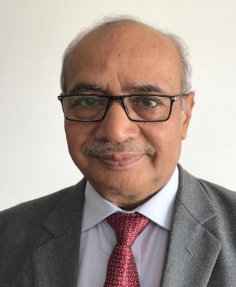

Scientist, R & D
Dr. Shashi Bhushan Singh is a distinguished expert with a blend of technical, academic, and administrative competence in materials, manufacturing, and management, with over 4 decades of experience, including director roles at DRDO (Defence R&D Organisation).
As an Outstanding Scientist & former Director of the Naval Materials Research Laboratory (NMRL), Institute of Technology Management (ITM), and Principal Associate Director at the Vehicle Research & Development Establishment (VRDE), DRDO, he has spearheaded critical R&D projects in defence technology, materials science, and manufacturing innovation.
He has played a pivotal role in technology development, project management, strategic planning, and leadership training for DRDO and the Indian Armed Forces. His expertise includes metallurgy, foundry technology, rapid prototyping, process optimisation, and product development, with multiple patents and publications to his credit.
Dr. Singh has supported advanced initiatives in AI Products, rapid prototyping, and the manufacturing of drone technologies and defence-grade systems.
Notable achievements include leadership coaching, team building, and mentoring over 100 scientists and technical officers across mission-critical DRDO projects. He has collaborated with multiple ministries and defence bodies on futuristic strategic initiatives, contributing to India’s technological leadership.
He is the author of the book “Applied Thermodynamics” and holds the prestigious degree of D.Sc (Doctor of Science in Management). An alumnus of IIT Kharagpur, he earned his M.Tech and Ph.D. in Metallurgical Engineering, along with an International Executive Diploma in Project Management.
After superannuation from DRDO, he has served as an Emeritus Professor, consultant, and advisor in advanced research fields, and has received several honours including the DRDO Technology Awards and Lifetime Achievement Awards.
